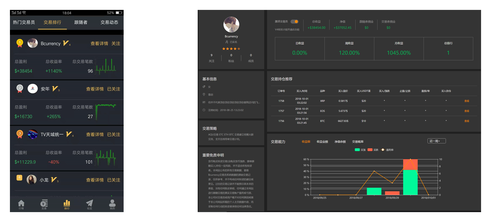
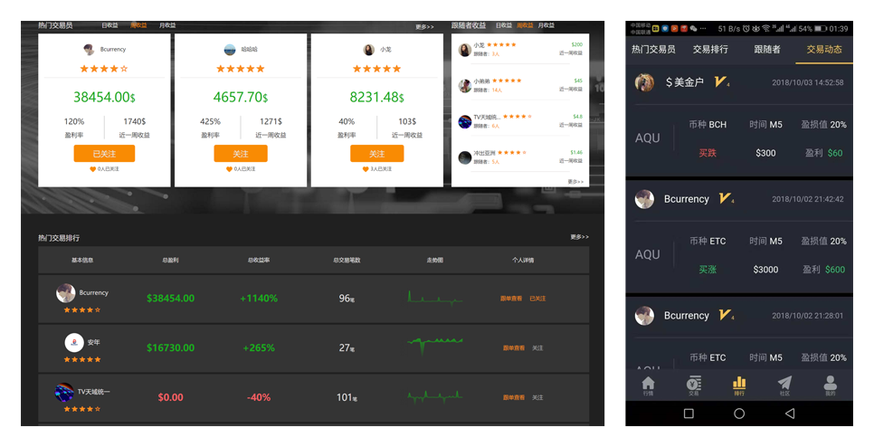
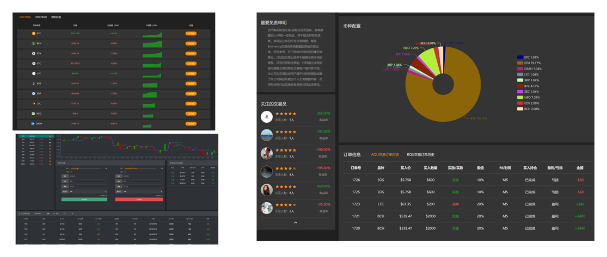
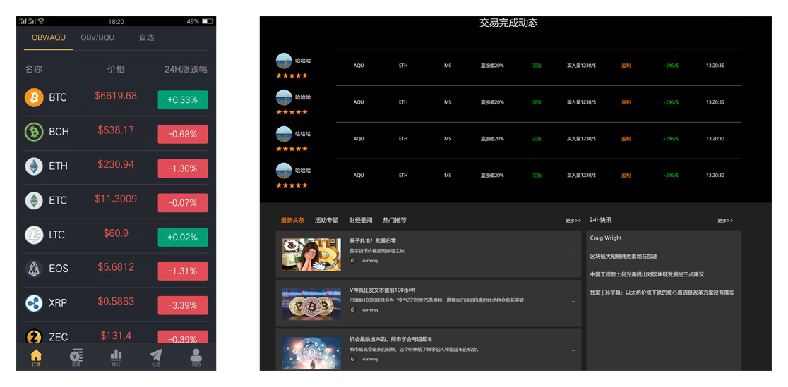
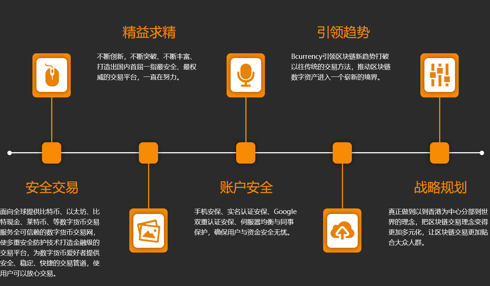
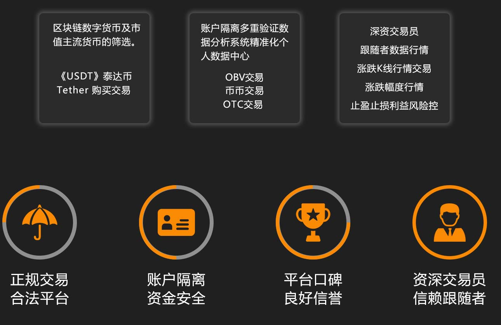

1、投资者对币价的评论越不一致，成交量越大；反之，成交量就小。因此，可用成交量来判断市场的人气和双方的力量。
2、重力原理。上升的物体迟早会下跌，而物体上升所需的能量比下跌时多。涉及到币市则可解释为：一方面币价迟早会下跌；另一方面，币价上升时所需的能量大，因此币价的上升特别是上升初期必须有较大的成交量相配合；币价下跌时则不必耗费很大的能量，因此成交量不一定放大，甚至有萎缩趋势。
3、惯性原则——动则恒动、静则恒静。只有那些被投资者或主流币在很大一段时间内成交量和币价的波动都比较大，而无人交易或交易量很少的数字货币，则会在一段时间内，成交量和币价波幅都比较小。
买入原则：
1. 必须观察OBV之N字形波动。
2. 当OBV超越前一次N字形高点，即记一个向上的箭号。
3. 当OBV跌破前一次N字形低点，即记一个向下的箭号。
4. 累计5个向上或向下的箭号，即为短期反转讯号。
5. 累计9个向下或向上的箭号，即为中期反转讯号。
6. N字形波动加大时，须注意行情随时有反转可能。
收益率浮动趋势
净值/余额浮动趋势
平仓/总收益浮动趋势
月收益/交易量分析
多项交易指标统计
品种收益/交易量分析
多空收益/交易量分析
历史每小时收益分析
订单持仓时间/收益分析
品种收益/交易量分析
多空收益/交易量分析
历史每小时收益分析
订单持仓时间/收益分析
时实报价、行情走势、指标分析、在线交易、订单管理
下载手机APP客户端，网页快速登录
时事快讯、行情动态、市场情绪、社交互动，让交易更丰富
买入盈利实时分享，获利金额、跟随获利，让盈利能力清晰可见
时事快讯、交易动态、市场行情、社交互动，让交易更丰富
汇聚币种行情、订单动态、盈利排行、社交资讯、用户投资数据行情，让交易与社区高度融合
关注文章解析行情，用户畅聊交易心得，随时随地乐享沟通社区意见领袖，传导专业的交易见解、投资技巧，让交易更简单
B-currency主要为区块链数字货币、等各类数字资产提供交易平台，于 2018 年在 中国香港成立，是香港领先的垂直于数字资产领域的交易所。B-currency"元，财富，"之意，表达B-currency大家共同实现财富自由的愿景。
B-currency本着"让区块链趋势人人赚钱"的经营理念，建立了科学完善的交易策略，通过与金融机构的密切合作为数字资产交易商提供安全便捷的资金支付通道， 同时以先进的技术和装备搭建了稳定高效的电子交易系统，旨在尽壹切可能的努力为优秀数 字资产提供展示、流通的管道，为数字资产交易商提供安全便捷的交易场所提高投资效益，打造壹个公开、 公平、公正的数字资产交易平台。真正的让数字货币交易更加自由灵活！
Bcurrency集团在区块链行业不断科研创新是一家面向全球的专业数字货币交易平台，集资讯、交易以及金融服务为一体，提供区块链服务及数字资产交易，期望区块链在金融上的新变革在香港成立了金融创新数字资产交易平台Bcurrency（币元网），交易所汇集各个地区专业资深的交易员与投资经验，旨在改变区块链的传统投资方式解决数字货币暴涨暴跌的原因给投资者无经验者带来的巨大风险，为用户提供简单、安全、高效的顶尖级安全风控体系OBV数字资产交易平台。
Bcurrency提供比特币BitCoin（比特币）、Bitcoin Cash(比特现金)和Ethereum（以太坊)和等主要区块链数字资产的交易，以及来自全球最大市值流通的的主要货币。精选优质主流货币10种，全球领先的区块链投资者。完整的交易体验，对于希望分散投资和分散资本的交易员来说多元化参与研究等更多获利的投资机会。
基于多级风险识别控制的银行级用户数据加密和动态认证，以确保最大的事务安全性
一种机构级高性能匹配引擎，每秒处理多达100万个订单
这是一本高流动性的订单簿，涵盖了广泛的全球数字资产，并允许用户以最小的滑点进行无缝交易
直观的用户界面与高效的/结算流程和知识渊博的客户服务团队相结合由经验丰富的金融old_markets专家设计的专业交易引擎由第三方专家审核的高度安全的平台专门的市场制定计划，为交易者提供深刻和一致的流动性
B-currency让金融更加高效，自由、公正、公平的理念面对竞争对手充分尊重金融市场的交易规范与金融机构的密切合作为数字资产交易者提供安全便捷的资金交易通道，建立公平公正的交易机制。
B-currency的香港与国外运营团队，海外运营、，高级前端开发、测试分析数据、IOS工程师等区块链专业人士，业界顶尖资安顾问进行架构评估规划，在团队方面占领绝对的优势。
区块链展现了以密码技术为核心构建信息系统安全的新潮流。区块链技术发展将与密码技术的应用发展形成长期良性的互动，但密码技术在区块链领域发展过程中还将伴随着长期的挑战。应该积极推进以区块链技术服务于现实需求的应用落地，大力发展有多重安全保障体系，对于区块链的安全，应该积极构建完善的安全认证测评体系。
区块链作为一种新兴的互联网技术随着新产业的发展，区块链技术的潜力也在不断发展受到了各行业广泛的人关注，不同的国家企业纷纷投入，区块链涉及数据较多、技术复杂、相关技术人员短缺，创建一个可验证的一致性系统不是一件容易的事情。一个小错误（Bug）可能会破坏整个数据库，或者导致一些数据库与其他数据库不同，大量资金研发成本较高所需较多的时间去深入研究进度缓慢。
从目前来看区块链技术还是存在很大的泡沫，必须不断地更新完善更深一步的去科研，未来区块链趋势发展币元网的OBV交易法无论是交易所更新模式方面还是运营应用，都会对未来区块链的发展起到重大作用。
新用户注册开户信息，并在后续进行正确的信息添加绑定，以建立您的个人资料的完整性和安全。自动化第三方评审系统及计算机文件信息探测器。
查看您的资金流动和支出，捕获交易收据和交易的图像，并自动跟踪购买形成数据订单。在交易执行时无价格滑点，双向6位数交易报价及快速交易执行。
根据用户系统数据并选择接收数据值，通过我们的交易市场跟踪您的订单并获取订单详情数据分析做明确化嬴损率和数值。
数字资产交易现状，盈利投资者仅占 2%
B-currency资产交易平台，帮助投资者将盈利率提升至 20%
严选数字货币 从源头上规避不良数字资产Bcurrency用户账户资金操作，均在相关钱包及系统化数据平台内交易。同时 ，B-currency坚持行业高标准，严格甄选注册用户及交易员， 保障用户资金安全。Bcurrency甄选货币标准：
让用户利益不断增长
星级用户级别给您带
来更大的优势和发展
跟随交易策略效率更高
交易员推荐策略后，
可随时查看跟随交易
员策略下单
随时随地乐享沟通
随时随地与交易高
手互动